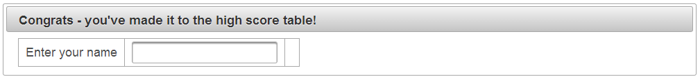
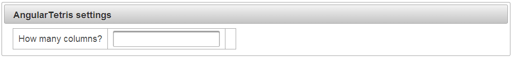
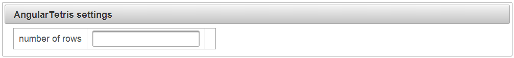

Labels and messages
One the most annoying and tedious tasks of JSF programming is having to deal with labels and messages. AngularFaces takes the scare out of that.
Mind you, how often have you written something like this?
To make the tabular layout visible, the examples on this page deliberately draw lines around the grid cells.
That's one input field, but three JSF components. Before the invention of @next and @previous, you have to add ids to assign the label and the message to the input field. In fact, you still have to do this unless you're using PrimeFaces.
AngularFaces automatically adds the label and the error message to input fields. The label attribute of the input field is taken as the label caption:
In many cases, the label can be derived automatically from the bean attribute name. If you omit the label attribute of the input field, AngularFaces assumes the bean attribute name is a camel case version of the label. That's a useful feature for rapid prototyping - and even beyond if you see to it to chose expressive variable names. For example, the next example is as simple as can be:
How to prepare the project
As of AngularFaces 2.0 RC3, automatic addition of labels and messages requires a little preparation:
- Add two attributes to <h:body>:
- Add an id to <h:form> or <h:body>. This id has to be named "angular";
- Add the "angular" id to the list of ids executed by the command buttons. If you're using PrimeFaces, simple add update="angular":
-
Add a Javascript file called "main.js" to your project. It activates the client side widgets of AngularFaces - such as the AngularFacesMessage:
Layouting labels and messages
As of AngularFaces 2.0 RC3 labels always preceed their input field. Messages always follow the input field. That's why the example uses a PrimeFaces panel grid with columns="3": The input field is accomponied by two components that are added automatically to the JSF view.
In a future version, AngularFaces is going to have more flexibility (such as putting labels above and messages below the input field).
Supressing automatic generation of labels and messages
There are two ways to influence the creation of labels and messages:
First, you can switch off the automatical creation of labels and messages by adding an attribute to <h:body>.
- addlabels="false" suppresses the automatical creation of labels for the entire JSF view.
- addmessages="false" suppresses the automatical creation of messages for the entire JSF view.
Second, AngularFaces doesn't add a label if it recognizes there's already a label. So all you have to do is to add an outputLabel manually, and to set the for attribute. The same applies to the message attribute.
Example project on GitHub
Check out the demo project at https://github.com/stephanrauh/AngularFaces/tree/master/Tutorial/step_01_labels_and_messages.